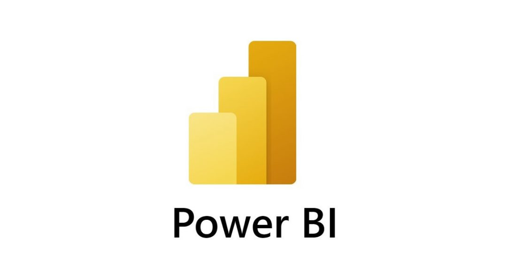

In this project, I clean the nashville housing raw data by populating columns, splitting columns, replacing values, normalizing data typos and differences, removing duplicates and dropping unnecessary columns with SQL.

In this project, I show the variables affecting the gross revenue of movies using Python.

This project contains reports/visualizations which I created with PowerBI after data cleaning and manipulation with Power Query editor.
This project shows how I explored the COVID-19 data to gain insights on how the cases of infections, deaths and vaccinations progressed in different locations with time.

In this project, I use BeautifulSoup in python to obtain the data which I need in order to analyze price, date, rating and star rating for iphone14 from amazon..
This project shows how I analyzed the international breweries data recorded for a duration of three years with SQL. The aim of this analysis is to help make better decisions, which in turn will maximize profit and reduce loss to the lowest minimum.

In this project, I carried out cleaning and analysis of the superbowl game and how it has affected TV viewership over the years.